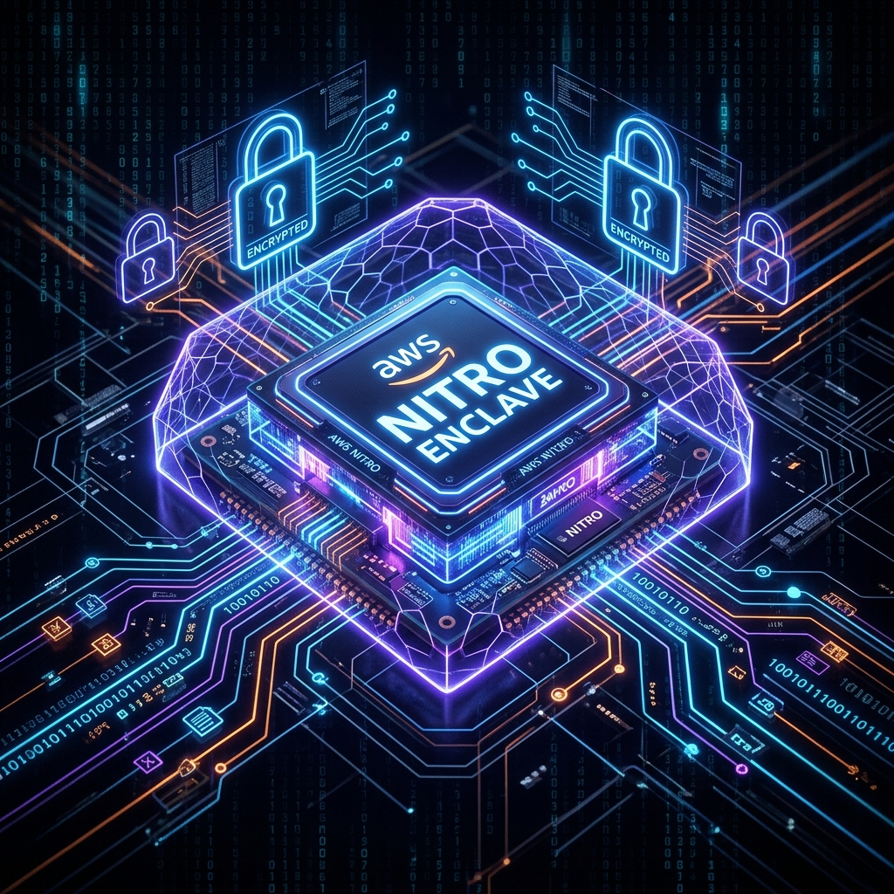

Zero-Leak AI Workloads: Designing ATL-Trust for AWS Nitro Enclaves

In highly regulated sectors, deploying autonomous AI agents to execute database queries or call payment APIs is an engineering headache. If an EC2 host is compromised, an attacker can extract session keys, model weights, or private databases from memory. To secure these high-risk operations, ATL-Trust is architected to run securely inside AWS Nitro Enclaves, isolating CPU-level processing with no external network, local console, or SSH access.
The Architecture of AWS Nitro Enclaves
AWS Nitro Enclaves partition CPU and memory resources from a parent EC2 instance. The enclave operates inside a completely air-gapped environment. Communication between the parent EC2 instance and the Enclave occurs exclusively through a secure virtual socket (vsock) interface. There is no persistent storage, no external network connection, and no root operator account.
Under our architectural blueprint, ATL-Trust is designed to run its core validation logic inside the Nitro Enclave. We have verified this design locally using virtualized attestation simulation scripts, demonstrating in simulation how validation check payloads can be forwarded via the vsock, signatures verified inside the simulated enclave, and reports signed using keys managed by the simulated environment.
Cryptographic Attestation Verification
The primary security control of a Nitro Enclave is its cryptographic attestation document, signed by the Nitro Security Module (NSM). This document lists Platform Configuration Register (PCR) measurements of the Enclave Image File (EIF). If the code inside the enclave is modified in the slightest, the PCR0 hash changes, and validation fails.
Here is the verification design model for confirming the integrity of the enclave:
def verify_document(self, document: dict) -> bool:
# Verifying AWS Nitro Enclave Root Certificate signature
if not document.get("signature"):
raise AttestationException("Missing Nitro Hypervisor Signature.")
# Verify PCR0 (Enclave Image File Integrity)
actual_pcr0 = document["pcrs"].get(0)
expected_pcr0 = self.expected_pcrs.get(0)
if actual_pcr0 != expected_pcr0:
raise IntegrityException("PCR0 (EIF Measurement) mismatch!")
return TrueKey Takeaways for Enterprise AI Governance
- Complete Operator Lockout: Even the system administrator of the parent EC2 instance cannot access enclave memory, safeguarding API tokens during runtime.
- Immutable Auditing: The enclave's cryptographic verification guarantees that only verified versions of ATL-Trust execute model validation.
- Air-Gapped Decoupling: Isolating LLM prompt processing from direct internet access helps prevent data exfiltration during execution.
Enterprise M&A Inquiry
For technical due diligence or architectural deep-dives into our zero-trust framework, please request access to our tech specs and roadmap.
Request Tech Specs